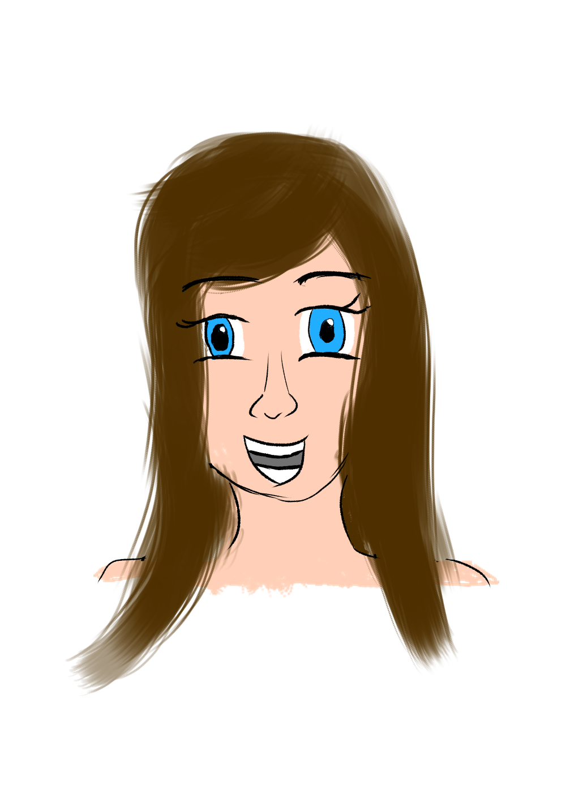

Introduction
What is Tabitha?
Tabitha is a new programming language designed by me, Matthew Smith. It is a procedural language, which takes a novel approach to global data. It also has an elegant type system which allows for a rich variety of data-types.
Why is Tabitha?
Tabtitha was created as a showcase of my vision for the design of larger applications. When creating large applications in C or C++, there are some difficulties in managing a large amount of data which is used by many functions. The usual solution in C is to create types representing a context of some kind. These objects are passed around so that many functions can modify the data therein. In C++, data is encapsulated in classes, and good programming practices lead developers to place the functions which modify said data in that same class.
This is known as the object-oriented approach.
There is an issue to this approach. As well as leading to a lot of boilerplate code, software written like this tends to be unstable to refactoring. When functions require access to more data, we have to merge classes or split the function into multiple functions and place them into the appropriate class.
There are some other issues with object-orientation, but I choose not to get into that here.
Tabitha proposes to keep things simple, while still allowing some association of data with functions. It does this by flipping the relationship on its head; functions do not belong to classes (which should primarily be considered as data stores), but rather functions capture collections of data. Tabitha calls these data collections contexts, and so we can phrase this as Tabitha functions capturing contexts.
Who is Tabitha?
Tabitha is our mascot. She absolutely loves C, but is frustrated by some of the problems coming with her large projects.
